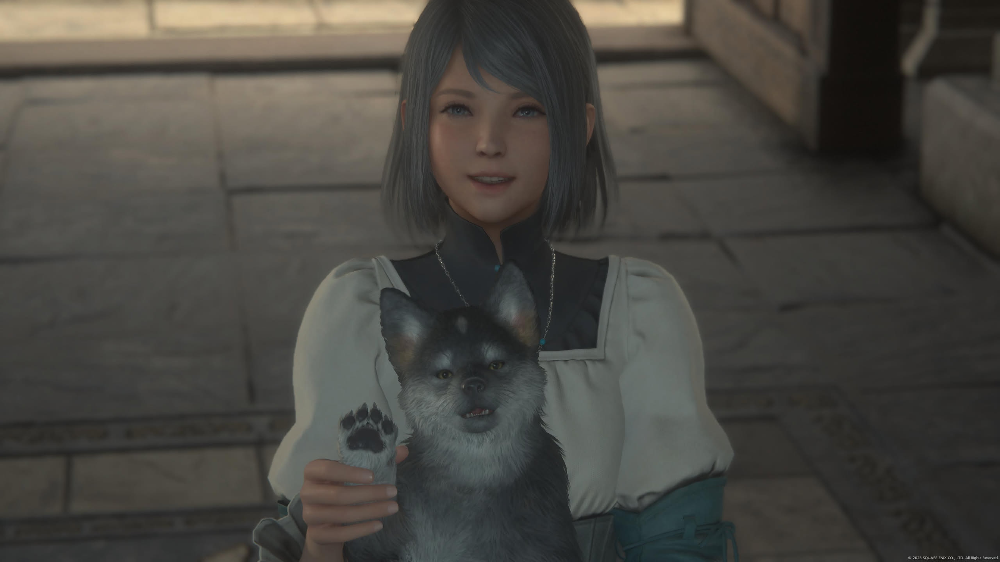
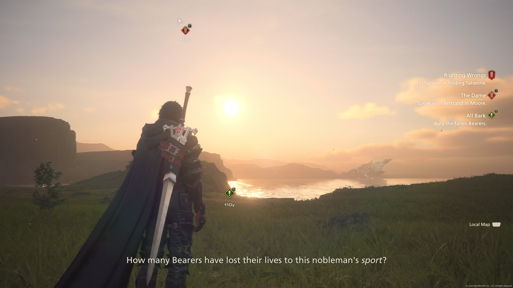
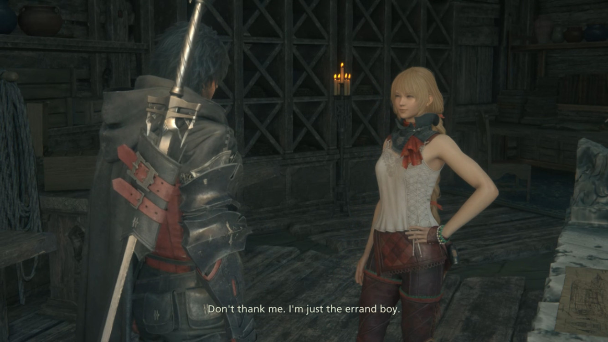

1game1week - Week 32 (8/5/25) - FINAL FANTASY XVI
Hey all! It's (almost) week 32! (8/6 -> 8/13)
It seems as if my time off is slowly dwindling away... I'd forgotten how nice it felt to kick my feet up, uninstalling Teams and spend 23 hours grinding a game.
Ended up hanging out with a coworker friend of mine as well to watch wrestling over the weekend. Beers were drank, shit was talked, good fun. As silly as it feels to admit it's been a while since I'd hung out with a friend.
I'd only wish I had more time... actually, I'm only really taking this time off because I stopped accruing. I think my limit was 240 hours or so. Since not taking a vacation would mean losing money, I chose to take a vacation.
Well... it's nice to take a vacation too, mental-health-wise. Too much stuff goes on. Too many frustrations. But this stuff, drinking beer, playing games, hanging out, that's the stuff that's worth answering endless questions from helpdesk for.
Should start taking note of when to take vacations. One every so often wouldn't kill me.
Anyways!
New games from 7/30 -> 8/5:
FINAL FANTASY XVI - The Rising Tide (Gifted by Gidy, thank you)
FINAL FANTASY XVI - Echoes of the Fallen (Gifted by Gidy, thank you)
Currently, my backlog is at +14 (lower is better, +1 from last week).
And onto 1g1w. Once again, a game is considered "beaten" if I've accomplished the main objective of the game.
GAME: FINAL FANTASY XVI
PLATFORM: PlayStation 5
GENRE: Action RPG
STARTED ON: 5/4
BEATEN ON: 8/5
TOTAL PLAYTIME: 50 hours and 17 minutes (tracked via Exophase)
TLDR: I didn't like this game very much
Please note: as much as I try to keep my yapping spoiler-free, I don't think I'd be able to accurately describe my thoughts regarding this game were I not to spoil a few things. I'll try to have as few spoilers as possible.
You can probably tell by the length of time it took me to beat it (three months) but I've been mostly chipping away at this game up until a couple days ago with a huge 23 hour push. And all these three months I've held the same opinion of this game: I don't like it.
There's a few reasons. Keep in mind that this is my opinion and that the friends I've talked to when playing this game don't really agree with my overall thoughts of it being bad. I also do think the game has some good aspects to it. It's not like it was a completely worthless endeavor.
For starters, I really liked the soundtrack. It was great to listen to, even if it occasionally got a little repetitive (not its own fault, it's a long RPG, I don't hold it against it). I think my favorite part of the soundtrack was:
The story was... okay. It's nothing I've never seen before, nor is it the best execution I've seen of these themes being relayed- free will, breaking free from servitude / slavery, racism (classism?), etc. It does an okay job.
There were a few cool gameplay sections. Some of the boss fights have what I can only really refer to as a StarFox section which is neat. Only one really did it "right" where it felt natural / StarFoxey, but they all tried... so I guess I have to commend it on it.
I legitimately struggle to find more positive things to say. Truly, I don't want to come out of a game and say "this SUCKS!" straight out. There's always good somewhere. I'm trying my best to come up with things, but those are the only ones I really... can come up with.
Once again: you might disagree with me. That's okay.
I think my biggest problem with this game is that it never really felt as if it knew where to go up until the latter quarter of it. As a result, everything in between is muddled with things that eventually get little payoff, or that are irrelevant to what the game is actually trying to say.
There's a whole bunch of different characters- in my opinion, too many, and it all makes for things to feel very villain of the week. First, it's Benedikta. Then, Kupka. Then, it's the Black Shields. Then, it's... you get the point.
By the end of the game, I can't really name one thing most minor villains did for the end to really make sense. Were they necessary? Was all of this really villain of the week? Did the overall theming or message in the game change because of them? Did we ever learn of their ambitions? What they truly wanted out of all of this? Or were they simply plot devices, to show wicked, greedy people?
This sheds light on a slightly bigger problem: the game doesn't make me care about its characters. Not just the minor antagonists. Let's take one of the major protagonists of the game, Jill.
Clive's childhood friend, Jill is taken by cultists that treated her extremely poorly and used her powers as the Dominant of Shiva to fight its wars. Clive is (albeit accidentally) put in a position to free her from them. Once he does, she proceeds to sleep for the next 5 hours of gameplay.
Once she's awake, after a few missions, we're put in a position to raid the cultists who mistreated Jill. She's able to kill their leader and have her revenge, freeing herself from the chains that bound her. This might be awkward to mention, but I didn't even remember Jill's name until this point in the game!
Then she proceeds to do fuckall for the rest of the game aside from being a character that sometimes gets lines assigned to her, or being someone for Clive to rescue or rely on. There is very little in terms of an actual character arc, past the first little while.
And this happens with almost every. single. character. Sure, some character arcs may be resolved, but it doesn't feel like they paced well, or that they're interesting enough to really be earned. They feel as if they were shoved in last second without any real thought of what the character would really do after.
The character that suffers the most from this in my opinion is Clive. In fact, I think Clive is an unchanging, unlearning Gary Stu because of how the game handled its plot.

Somewhere along the quarterish part of the game, there is a (second, mind you) timeskip. It's a five-year gap between the time Clive becomes the de-facto leader of the Cursebreakers, and I think it kills Clive's character. The problem is a result of the timeskip. Pre-timeskip, we see Clive adjusting and learning some of the things he needs, but still being incredibly in over his head. People talk behind his back. He's a little weirdo Cid brought along.
Post-timeskip, everyone in the hideout loves Clive, Clive you're the best, we love you Clive. And his character arc ends. Nothing about Clive's ideals or goals change between here and the end of the game. He becomes a static character... and this is not necessarily Clive's fault, I think the timeskip is at fault.
Look at it this way: what would you think of Rocky without the training montage? Do you think the payoff in the end really feels earned? Do you think, without the montage, that he earned it? Or are you just okay with just being told "anyway he trained a lot guys". I think this is what I'd like to equate it to.
He learned nothing, he changed nothing. He was just Clive. The kind Clive, ready to help his friends at a moment's notice. Everyone loves him. He's SUPER strong... and he's so hot... also, don't ask about his traumatic past............... don't mess with him, kid......... you're not gonna like it..........
I want to pivot a bit and talk about how the game presents its story: cutscenes, it's just cutscenes. I played this game for 50 hours, doing most of the side content. Looking on Youtube, an 'all cutscenes' video is 20 hours. For 40% of my entire time playing this game, I sat there watching a movie. In fact, if I *hadn't* done all the side content I did, it would've put me at 30ish hours, which makes it a 2:1 cutscene to gameplay ratio.
It's okay to have your exposition via cutscenes, but oh my lord, does 66% of your game really need to be cutscenes? I doubt that these videos are counting the times when the characters are dropping lore when talking post / pre cutscene as well. I could never really decide whether this was a game or an interactive movie.
My biggest pet peeve with all this was: watch a cutscene, the game gives back control to you for a second, ONLY for it to expect you to talk to another character to START ANOTHER CUTSCENE. It's like that thing from Netflix where it's trying to preserve its bandwidth with "are you still watching?", except it's trying to make sure you're not asleep.
You might say, "they're giving you a break so you can do other things", but the game constantly puts you in situation where you're not able to fast travel anywhere until you watch that cutscene. So, instead of say, seamlessly going from one cutscene to the next, it just wants to give you a tiny bit of hope that you'll finally be able to fight some monsters only to dash it and spit in your face.
Heck, going down a bit further, an insane amount of the main story becomes: go to this place. A random character who is allied with your cause (to an extent) shows you how everyone is suffering. A random thing happens for you to help the suffering people. The suffering people smile in glee and hope because maybe there's a better way after all, thanks SuperClive, we'll never forget how you killed those bandits. That was really cool Clive. We love you Clive. Anyway, go to this other region and do the exact same thing!
If I want to get even more granular, the specific instance I'm thinking about has some pickpocket kids in a market steal something from one of Clive's friends. This leads to:
- Discussion about the stolen item
- Discussion with random lady who Clive's friend happens to know, who points to a guy selling furniture (actually a guy trying to knock down a ring of people abusing kids and paying them to steal)
- Discussion with the furniture guy, who points to a lady who sells fish (also, a lady trying to knock down a ring of people abusing kids and paying them to steal)
- Discussion with fish lady, who says "lol just talk to the kids"
- Discussion with kids, who say, "lol talk to the other kids"
- Finding the culprits, who run away, so give chase
- You have found the kid that stole the thing who unfortunately no longer has it, but he can give you exposition instead
- You're now tasked with slowly walking over a few paces to the BAD GUY BASE and destroying them. They have it written with neon signs and sell martinis (to kids)
- After beating them to a pulp (no problem for good old STRONG Clive), you finally get your friend's stolen item back and FREED the children from their NE'ER-DO-WELL employers.
- Ok go away now
Even just typing that gave me a headache, but it's just what happens in every single area of the game. Same script, different characters, slightly different circumstances. In this particular scene it's even worse because you don't get to show off Clive's heroism. You know how to do it?
- Have the party witness the pickpocketing, and stop it as it happens.
- Shake down the kid, and get the exposition.
- Go beat up the bandits taking advantage of kids not because you need your stolen item back, but out of the goodness of your heart
- Ok go away now
PLEASE tell me that's not better. It MASSIVELY shortens the amount of time you're stuck in the same plotline. Even if you're having the same-ish 'save everyone' conclusion for every area, it's a bit better to just have less middlemen in the scenario.
Let's talk about combat. It just isn't that fun. It's repetitive. A lot of enemies are just health sponges and there's not really a lot of fun. I was told that part of the fun was the combat, but 1) when I was told that, combat was so scarce in the sea of cutscenes I felt like a begging child wanting a second plate of food, and 2) combat was so uninspired that it didn't really hit home with me.
You mash your face on the controller, while albeit pretty normal for an Action RPG, is boiled down to essentially that. The game never encourages you or teaches you the knitty-gritty of its combat system. It never tells you if your combos are lame or if you're Smokin' Sexy Style.
And so, path of least resistance: you mash your face on the controller, press R1 to dodge the incredibly, incredibly telegraphed attacks your enemies dish out, and just wait.
When you have long fights or health sponge enemies, it becomes a 20-minute snoozefest of "I know this pattern, I have to dodge here". Like, I learned it. I can dodge it if I remember to hold my controller. The game is rewarding me by letting me hit the bad guy. Please let the bad guy die in the next 10 years. I haven't seen my wife and kids in a decade and all I've done is dodge the same five or six attacks. He's also a boss so it's not like I can do cool combos because armor prevents it. So I have to chip away.
The enemies are almost never an actual threat just due to the kit Clive has combined with telegraphed attacks. Some fun and variety would come from actually being able to build your own Clive (gearing, etc) but it's mostly missing. The only real "gearing" is upgrading swords and armor which is just a way to increase ATK / DEF / HP stats. You can sort of... build with choosing Eikons. But it's not really what I'm looking for.
This is mostly present in the latter half of the game bosses, and it just wasn't fun. It just felt like padding... which brings me to:
Sidequests. There are some sidequests that are legitimately worth the effort, like the ones that expand your storage, or give you a Chocobo, or... wait, that's right! Why is the Chocobo in this game locked behind a sidequest, when it's supposed to be a large world? Also, why on earth is the Chocobo restricted so much, where I can only use it in open areas? Why can't I stride into town with a Chocobo? Why is the Chocobo just slightly faster than Clive sprinting? Speaking of which, why doesn't Clive have a dedicated sprint button?
There are a total of 76 sidequests in Final Fantasy XVI. An insane amount of them are just random fetch quests or, for some reason I CANNOT fathom, talking to kids about how scales work. It makes the gameplay loop boil down to 'talk to this person, then fight this guy, then talk to this other person'. Most did absolutely nothing for me and took 20-30 minutes each of people talking about random problems until I'm finally told to slowly wade on over to wherever the monster that needs slaying is, only to be finally given the mercy of a fast-travel button back to listen to the same person for a couple more minutes before finishing the quest.
Some sidequests didn't even have the decency of giving you combat. A good chunk of them, legitimately, were just about talking to other people and disguising it as "worldbuilding". It's not. It's annoying. So annoying in fact that when SIXTEEN new sidequests dropped before the final boss, I opted to just skip them and come back later. I was burned out and tired and just wanted to end the game.
I'll be fair, there are also some REALLY cool plotlines for a few sidequests. The For Greater Justice plotline comes to mind... maybe Rekindling the Flame. One that was especially good, even if it was really short, was All Bark.

It seems as if those pre-endgame sidequests FINISH OUT CHARACTER ARCS. Oh, okay, so after 49 hours of gameplay, you decide NOW is the time to finish out ALL character arcs? The character arcs that have been noticeably missing the ENTIRE game? The character arcs that were randomly dropped for little reason, without conclusion, just so they could be shoved into a sidequest at the VERY END OF THE GAME?
It gets even more egregious when some of the main quests also devolve into just overly-long fetch quests. This is put at its best (worst?) in the Letting off Steam main quest. Talk to all these people, and go and fetch these parts. There was absolutely NOTHING of legitimate substance outside of a slight bit of characterization to Mid- which is okay, but I really don't need the length of a B-tier 90 minute movie to show me that she's a smart engineer. Really! Even worse, the game even seemingly mocks itself here, being a bit self-aware:

To finish it out, this quest's payoff is SEVERAL HOURS later. After this is done, you get placed back into the main story, and Mid goes away for a while. You don't get to see the end, the fruit of your labors, all that you did, you just get told 'ok you're done' as if you were in a random boring task and told to go away. I didn't want Clive to be an do-gooder errand boy, I wanted Clive to be a guy chewing bubblegum and kicking ass. Why does this game insist on making him do MMO-like fetch quests with no payoff?
One final thing is that the worldbuilding was so nonchalant that it made me completely miss where we even were half the time, or who was from where, or what nations had beef. I didn't want to spend even more time diving down lore or reading. By hour 40 or so you kinda get the whole geopolitical thing but it's so bogged down in details that I just gave up and decided "whoever the game says is a bad guy is probably a bad guy."
I really don't want to dislike the game, if anything I want so badly to like it. It's just incredibly bogged down by its poor ability to express its own narrative, its inability to properly make me care for its characters outside of Torgal, or its boring combat system, or its repetitive story beats, or its annoying side-quests, or its insistance in locking down cool resources behind 20-minute long sidequests (each), or its inability to commit to anything it wants to say... yeah okay you get the picture.
The game never really seemed as if it really had any substance to it. You could play Xenoblade instead and get the same "lessons" with an insanely well-made JRPG to boot. It is Xenoblade, though, so maybe comparing it to FFXVI is like comparing a hydrogen bomb to a coughing baby.
Even if you have all the hype moments and aura in the world, you just can't make a game good.
If you get anything out of this post, it should be that this game REALLY needed a minimap.

Thanks for reading! If you need to contact me for any reason, please feel free to email me at aru@hoshikawa-aru.com.